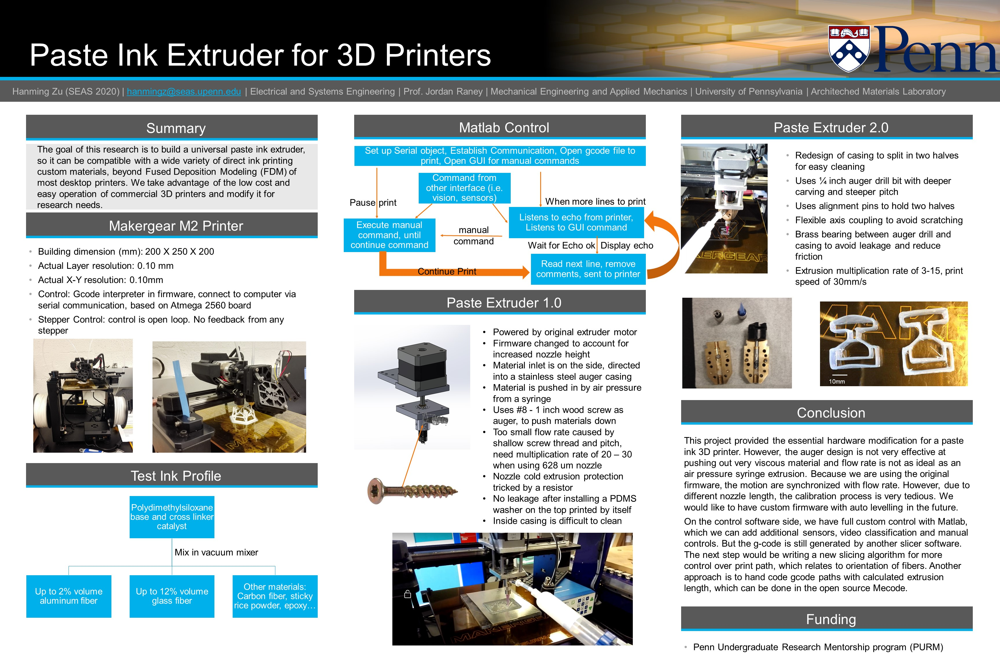
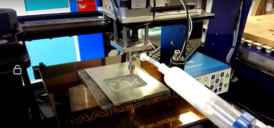
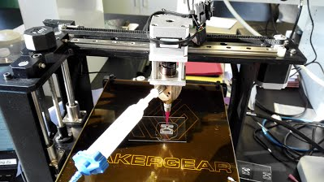
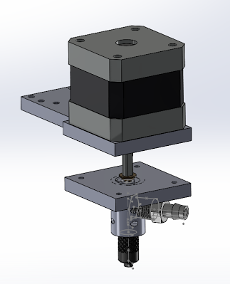

| Index | My Bio | Course Works | Experience and Projects | Publications | Contact Me |
During summer 2017, I work with Prof. Jordan Raney at Architechted Materials Lab, University of Pennsylvania. I work mostly on modifying a commercial 3D printer to print in polydimethylsiloxane (PDMS) and other paste like materials. 3D printers available on the market are mostly Fused Deposition Modeling (FDM) printers, which use a nozzle moving on the 3 axis and melted plastic to print models. Other printers that can print rubber like materials are at price range of 100K dollars. The goal of my research is to develop a low cost solution to printing macro scale structures from paste ink. I built upon the Makergear M2 FDM 3D printer, but this mod applies to all cartesian printers. Instead of a hotend nozzle, I designed an auger screw paste extruder, which is powered by the original filament extrusion motor. The paste ink is pushed into the auger from another syringe by air pressure, and then pushed out of the nozzle by the auger. Therefore, minimal changes in firmware is needed for this adaptation. I have also programmed a control software on matlab, that gave us full freedom to control the printer, without using its original software on the computer’s end. As the electrical engineer of my group, I work closely with materials researchers in our group, who outlined the requirements and the machine shop to manufacture the parts. I need to do a lot of mechanical design and programming. I also learned that although coding is an essential skill, it cannot solve all problems. All basic mechanical and circuitry pave to road to effective solution. I grow a strong preference towards matlab and Simulink, which provides efficient programming and vast libraries. However, what’s happening at the root is obscured, but that requires a lot of time to learn and understand, which is beyond the scope of this project. One limitation that seems impossible to break is the slicer algorithm, which converts a 3D mesh model into 3D printer motor movements. A lot of times, we need the paths to be a specific orientation, which affects how fibers line up, but all available slicing softwares do not provide this function. We’ve tried with hand code movements and using open source coordinate codes, but they are not satisfying. We’ll need to think of a better way to generate gcode. The 3D printer we have also has limitations in the structure it can print. If just to test the structural strength of a complex design, I would recommend a stereolithography printer. I learned that using the right tool is often better than trying with inferior tools. I feel that electrical engineer bridges the gap between mechanists and programmers. I have to understand what firmware/software can do, and what the machine is capable of. I also need to understand firmware, which is between control interface on computer and actual movements of a machine. This research is very rewarding in product development and work management.  |
   |